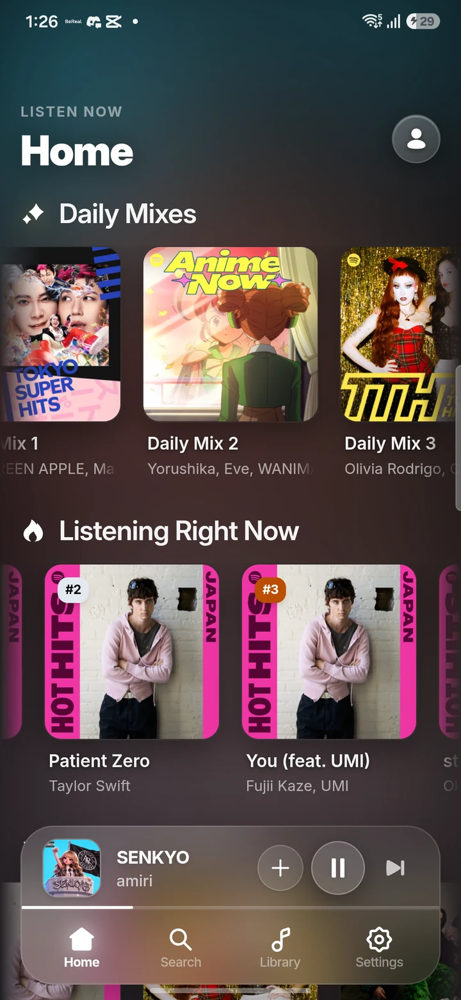
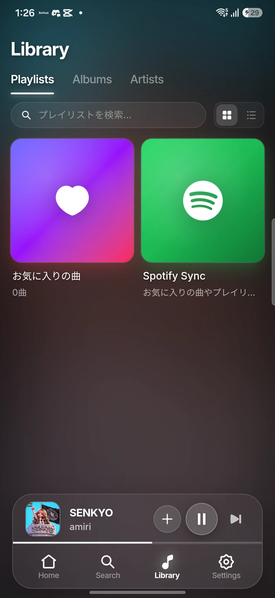
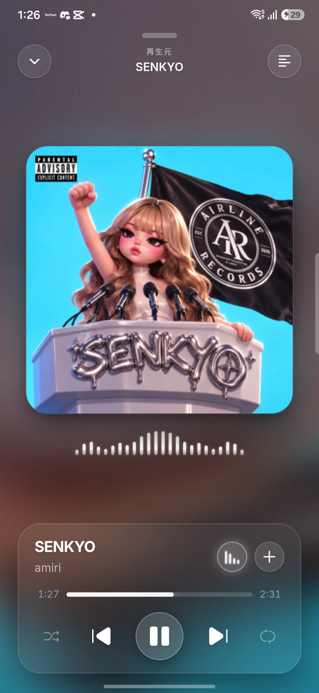
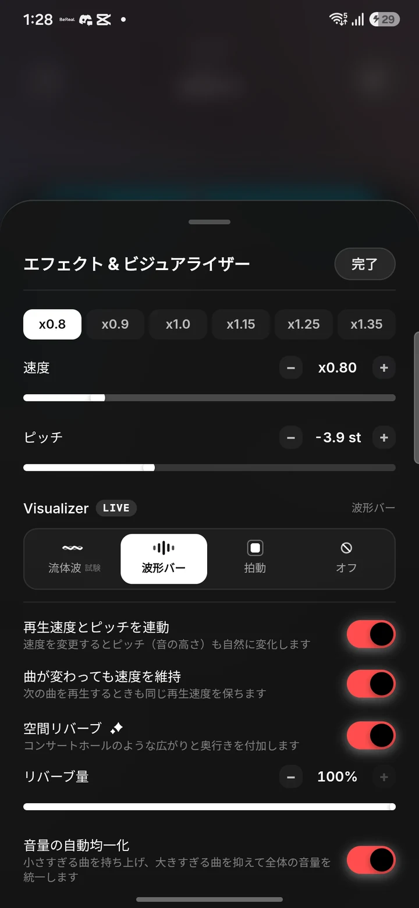

The Sync experience.
見て、触れて。
好きになる。
ホームから、音を整えるところまで。実際の画面でご案内します。
01 / 04今日の一曲が、
今日の一曲が、
ここから見つかる。
Daily Mixes や今聴かれている曲を、ジャケットから直感的に。探しに行く日も、音楽に任せたい日も。
気分を変えたいときは、ミックスから。ジャケットを大きく見せて、次の一曲との出会いを近くに。
色を感じる背景と、半透明のミニプレーヤー。再生・一時停止・曲送りをひとまとめにして、別の画面を見ながらでも操作が続きます。

02 / 04好きな音楽に、
好きな音楽に、
迷わず戻れる。
プレイリスト、アルバム、アーティスト。自分にとって探しやすい入口から、いつもの音楽へ。
画面上のタブで、プレイリスト・アルバム・アーティストを切り替え。探したいものに合わせて、一覧を変えられます。
ライブラリ内の検索と、グリッド・リストの切り替え。曲やコレクションが増えても、自分の見つけ方を選べます。

03 / 04一曲に、
一曲に、
ちゃんと浸れる。
大きなアートワークと色を感じる背景。必要な操作は下の半透明パネルにまとめて、音楽が主役になる見た目に。
アートワークの下で、音に反応して動くビジュアライザー。流体波・波形バー・拍動から選べます。
曲名の横にあるエフェクトボタンから、速度・ピッチ・リバーブへ。曲を止めずに、聴き心地を整えられます。

04 / 04欲しかった音に、
欲しかった音に、
指先で近づく。
再生速度、ピッチ、余韻をひとつのシートに。プリセットから始めて、細かいところは自分の感覚で。
0.8×、0.9×、1.15×などのプリセットをタップ。速度とピッチの連動も、自分で切り替えられます。
空間リバーブは量をスライダーで調整。曲ごとの音量差が気になるときは、音量の自動調整を。
